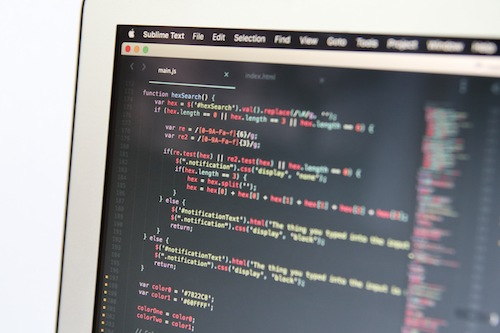

Zhvillues Softueri
Programimi kompjuterik është një fushë me rritje të shpejtë dhe që është bërë thelbësore në botën tonë të drejtuar nga teknologjia.
Programuesit krijojnë softuerin dhe sistemet operative në të cilat mbështeten të gjitha sistemet kompjuterike, nga PC-të desktop, te smartfonët te laptopët dhe pajisjet e tjera të lëvizshme.
Ata gjithashtu testojnë programe për gabime, rregullojnë çdo gabim që mund të shfaqet në kod dhe shkruajnë azhurnime për programet ekzistuese.
Meqenëse programuesit e kompjuterëve janë të nevojshëm për gjithçka, nga krijimi i faqeve në internet te aplikacionet mobile deri te lojërat video, ka shumë mundësi karriere në dispozicion për këdo që ka përvojë në këtë fushë.
Është një zgjedhje ideale për cilindo me një sfond të fortë në matematikë dhe aftësinë për të punuar me proceset vijuese, logjike nga të cilat varen kompjuterët.
Programimi kompjuterik përqendrohet në përdorimin e gjuhëve të programimit, të tilla si C ++, Java ose HTML, për të krijuar lloje të ndryshme të programeve.

Është një fushë më e hapur, krahasuar me fusha të tjera të shkencave kompjuterike si grafika kompjuterike, e cila përqendrohet në artet pamore, imazhet grafike dhe videot; inxhinieri kompjuterike, i cili përqendrohet në hartimin dhe zhvillimin e teknologjisë dhe pajisjeve; ose rrjete kompjuterike, e cila përfshin komunikimin ndërmjet kompjuterëve të lidhur përmes një rrjeti lokal lokal dhe internetit.